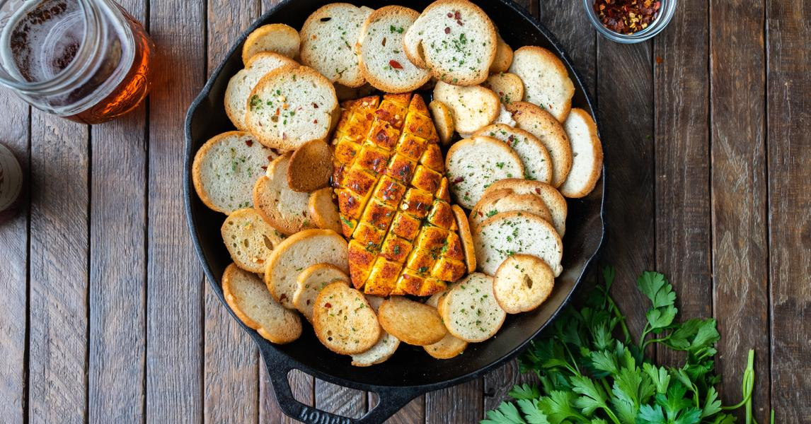

Smoked Cream Cheese

Sweet smokey cream cheese
I bet you think smoking a block of cream cheese is just madness right?
well, think again! This well exceed every one of your expectations!
All that this recipe requires is a block of some good old cream cheese, a little
bit of your favorite bbq rub and 2 hours of smokin' time and you're ready to impress
everyone at the party
Ingredients
- 1 block Philadelphia cream cheese
- 1 tbsp chili powder
- 1 tbsp smoked paprika
- 1 tbsp cumin
- 1 tbsp black pepper
- 1 tbsp kosher salt
- 2 tbsp brown sugar
- 2 tbsp garlic powder
- 2 tbsp onion powder
Instructions
- Fire up your smoker and set it to 200°F let preheat for 15 mins
- Combine all spices in a small bowl and whisk togehter untill well blended
- cover all sides of the cream cheese with the rub
- with a small pairing knife score the top of the cream cheese in a diamond shaped pattern
- put the cream cheese in a cast iron or foil pan and put into the smoker for 2-3 hours
- after the time is up its ready to pull off and serve right aways, enjoy!